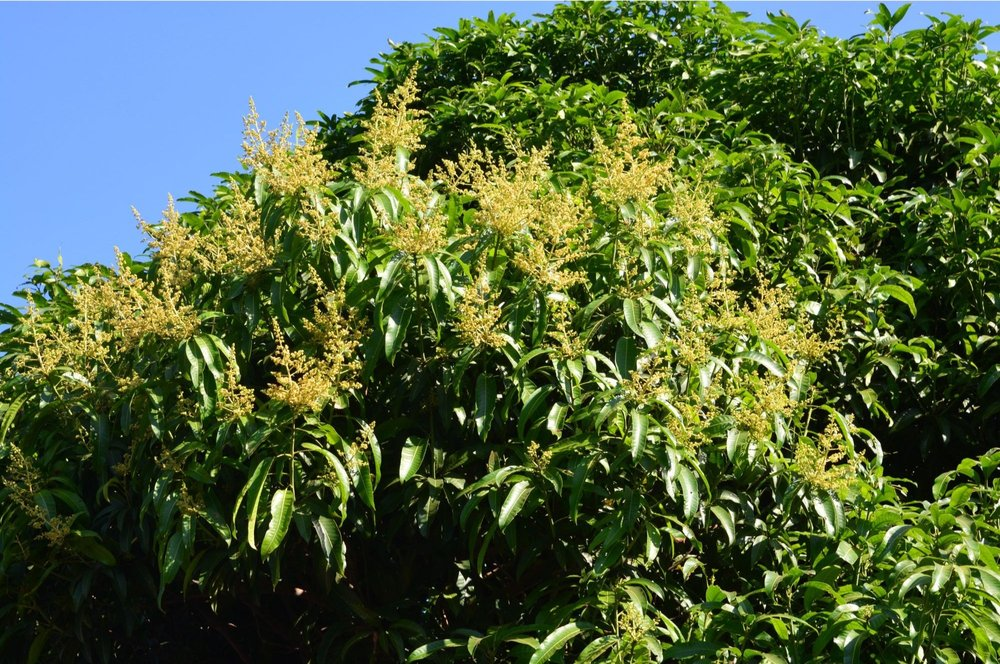

A modern orchard, built as a global export house
Modern Gir Kesar orchards in Talala - combined with full compliance, packaging and logistics for international buyers.

Who we are
Rooted in Talala, Gir. Built for export.
MODERN HARVEST is a modern mango orchard and export house established in 2026 in Talala, in the heart of Gir - the region globally recognised for the Kesar mango and its Geographical Indication (GI) tag. We were built from day one as a structured, compliance-first export operation.
We grow and source exclusively from the Gir belt, then grade, process, pack and ship to importers, distributors, retail chains and food manufacturers worldwide - with documentation and quality control at every step.
What we stand for
Our operating principles
Quality first
Every lot is graded to export standard and held to consistent specifications, season after season.
Compliance & traceability
APEDA-registered, FSSAI-compliant, with lot-level traceability and complete export documentation.
Reliability at scale
Season-long volume, dependable logistics and a single accountable team from inquiry to delivery.
Our varieties
The stories behind our mangoes
Gir Kesar - Talala, Gir
Grown in the GI-recognised Talala belt of Gir, our flagship Kesar is saffron-coloured, intensely aromatic and fibre-free - the benchmark for premium Indian mangoes and the heart of everything we ship.
Alphonso - the King of Mangoes
Sourced through vetted partner orchards, Alphonso brings its rich, creamy texture and signature fragrance - a globally sought-after GI variety we offer alongside our Kesar for buyers wanting India's finest.
Other GI-tagged varieties
Beyond Kesar and Alphonso, we supply select GI specialties - Dashehari, Bhagalpuri Zardalu and Laxman Bhog - each tied to its own region and protected origin, graded to the same export standard.
Our journey
From orchard to global markets
Modern mango orchards established in Talala, Gir.
Grower partnerships built across the Gir belt for Kesar and select GI varieties.
APEDA registration and first international export shipments.
Aseptic pulp and freeze-dried powder added to the export range.
Supplying GI-tagged Kesar, pulp and powder to 10+ countries.
In India
Our domestic presence
Beyond exports, we serve the Indian market through our corporate base in Ahmedabad and distribution into major metro cities.
Ahmedabad
Corporate office and domestic sales hub, coordinating supply across Gujarat and beyond.
Mumbai
Metro distribution for fresh fruit, pulp and powder to retailers, HoReCa and processors.
Metro cities
Growing presence across India's major metros, including modern retail and e-commerce channels.